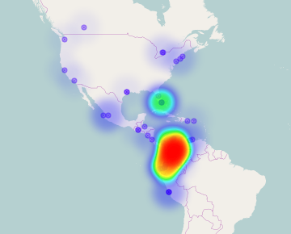

Apariciones de grupos musicales
Planteamos una forma colaborativa de recoger información de la escena musical, inicialmente las apariciones de proyectos musicales usando un repositorio distribuído donde todos podemos aportar; de allí es donde proviene toda la información
que vez acá de manera visual.